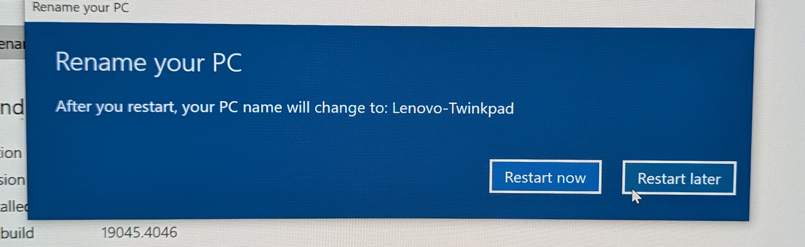
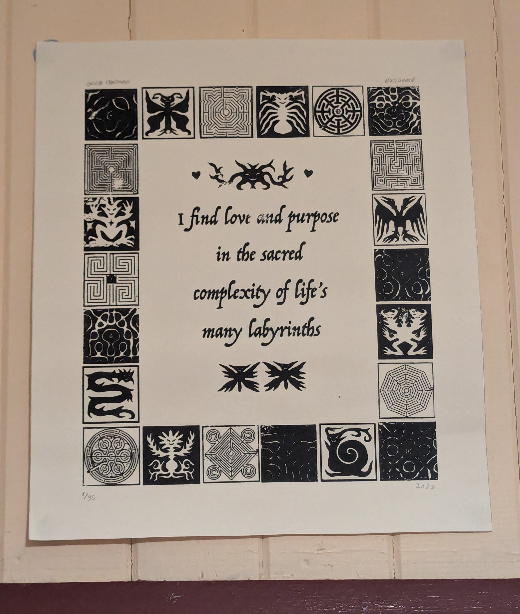

yesterday night i got my new laptop in the mail - a Lenovo Thinkpad T540p.
this computer is over 10 years old - it's not compatible with windows 11. it is incredibly heavy. the screen is huge to me (15 inches) but terrible - even on full brightness the glare of a dim room wins out.
it's so old it can't even imagine my 5k2k ultrawide monitor - it's not capable of exporting even close to that resolution through its VGA or even mini displayport outputs (the only 2 options). to use it with my monitor i've had to buy a mini displayport to 2*HDMI adapter and set up the monitor to do picture-by-picture of two inputs of the same laptop.
and yet. i love it. i was going through buckets of old tech dylan (that's my boyfriend) won't throw away because he is chronically sentimental (a hoarder) and found his old wacom bamboo drawing tablet he hardly ever used because his parents have money and love him and encouraged his hobbies and other stuff i wouldn't be familiar with.
i plugged it in and tried to draw myself. i'll include the drawing below. not to be pretentious but i felt this great sense of sadness for the childhood i lost. nobody ever cared about what i liked if it didn't suit them. i didn't have a single adult in my corner. i had to survive, i couldn't make mistakes. i never learnt to pirate photoshop, to draw, i never became part of a community of people like me, not really. i just watched because i was scared even the window i was looking throuhg would be taken away from me.
This is a pretty accurate depiction of me. I realise that a guy with long blonde hair and green eyes sounds like an elfsona of someone and i will admit my hair is dyed (naturally brown) but i really am like bella swan, just going outside looking dangerously waifish and yet you're like man, they gotta have something going for them. just like with bella swan.
i would have been so happy with a computer like this. i'm going to try and make mistakes and learn the stuff i wanted to learn - how to make a website, how to make sense of javascript, how to make digital art, how to make games, i want to play an online roleplaying game and get too into it, remote into this thing from work like a freak. i want to be weird because i am weird. i want to feel like i am allowed to and the world won't give up on me. my world as i knew it then never loved me even if i tried to be good. isn't it sad that stuff this simple was my idea of not being good.
finally, on the name of "twinkpad" - isn't it weird that hasn't been claimed? i feel so smug i might have had an original thought. dylan thinks i should draw one of those comics where you anthoromorphise inanimate objects as sexy bishounen boys who are in love except in our case one of them is that (the lenovo twinkpad) and the other is a sexy bara bear (the macbook bear. get it. like macbook air) because it subverts expectations. perhaps with my newfound skills i can make this happen.
anyway, i have set up this blog using zonelets which is linked in the footer, but chosen to only use their javascript because i am a weirdo who likes to know how everything works and i want to do the rest myself - i will begrudgingly admit that js makes no sense to me so i had to use the script on main of dysfunctionality. but it looks simple so hopefully i understand it soon. i plan to update my travels with the laptop as a window into who i am, though i'll have to think on what i intend to publish to my main site, "love and purpose". i'm realising now my main site title sounds woo-woo af but it's actually from this cool poster i have on my wall, it's an art print actually by olivia chapman who is a local (brisbane) artist.
